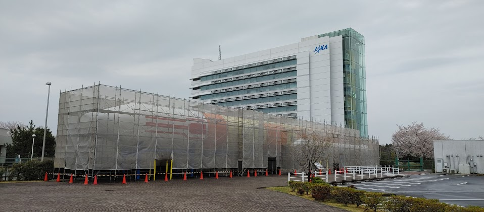

第四回「宇宙」

太陽系
- 太陽系：太陽を中心に惑星や小惑星、彗星などの集まり
- 地球側惑星：核がマントル（岩石）、表面が地殻（個体）
- 水星
- 金星
- 地球
- 火星
- 木製型惑星：核が岩石と氷、表面がガスで半径が大きい
- 木星
- 大赤斑：木星の大気中にある巨大な渦
- 小惑星帯：木星の重力で形成された小惑星の集まり
- 土星
- 天王星
- 海王星
- 木星
太陽系外縁天体
- 天文単位（AU）：地球と太陽の距離を1AUとする単位
- 太陽系外縁天体：太陽系の外側に存在する天体
- エッジワース・カイパーベルト：太陽系の外側に存在する小惑星の存在する場所
太陽
- 黒点：太陽の表面に現れる暗い斑点 - 暗部：黒点の中心部(4000K) - 半暗部：黒点の周囲
- 彩層：太陽の表面から数万キロメートルの高さまでの層
- コロナ：太陽の外部の大気
- 太陽風：コロナからでる高速のプラズマ(電子や粒子)
- プロミネンス（紅炎）：太陽の表面から数十万キロメートルにわたって伸びる炎の柱
太陽の活動
- フレア：太陽の表面から放出されるエネルギーの爆発
- 磁気嵐：地磁気の異常
- デリンジャー現象：電磁波の異常、通信障害
- スペクトル：太陽の光を波長ごとに分けたもの
- 連続スペクトル：赤から紫までの光
- 輝線：希薄ガスが特定の波長で放出する光
- 吸収線(暗線)：太陽の光が特定の波長で吸収される
- ブラウンホーファー線：太陽の表面の温度を測定するための吸収線
- 核融合反応：太陽のエネルギー源
HR図
- 絶対等級：星の光度を表す指標
- HR図(ヘルツシュプルング・ラッセル図)：星の色と絶対等級の関係を示す図
- 主系列星：HR図の左下に位置する星
- 巨星：HR図の右上に位置する星
- 白色矮星：HR図の右下に位置する星
- 赤色巨星：HR図の左上に位置する星
星雲
- 恒星でない空間にも微小な星間物質が存在する
- 星間物質
- 星間ガス
- 星間塵
- 分子雲：
- 原始星
- 原始星のあとは主系列星になる
宇宙の進化
- ビッグバン理論
- 銀河の形成と進化
- 宇宙の膨張と未来
恒星の進化
- 原始星 => 主系列星 => 赤色巨星 => 白色矮星
- 超新星爆発：質量が大きいときに赤色巨星=>超新星爆発
- 中性子星：超新星爆発のあとに残る星
- ブラックホール：質量がきわめて大きい場合
銀河系
- 銀河：宇宙を構成する単位（小宇宙）
- 銀河系：太陽系が属する銀河
- 銀河系の構造
- 中心核(バルジ)：銀河系の中心部
- 円盤(ディスク)：中心核の周囲に広がる円盤状の部分
- ハロー：銀河系全体を包む球状の部分
宇宙の膨張
- ビックバン：宇宙の誕生の爆発
- 宇宙の晴れ上がり：光が進むことにより宇宙が膨張していること
- ハップルの法則：後退速度は距離に比例する
- 赤方偏移：銀河のスペクトル線が赤色に偏っていること、宇宙が膨張していることの証拠